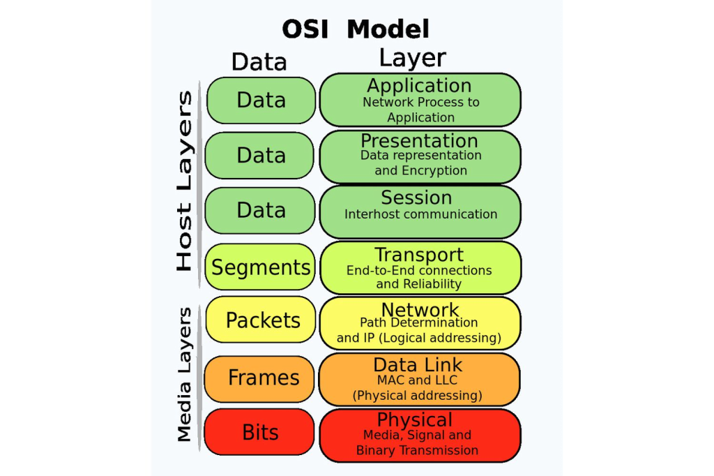
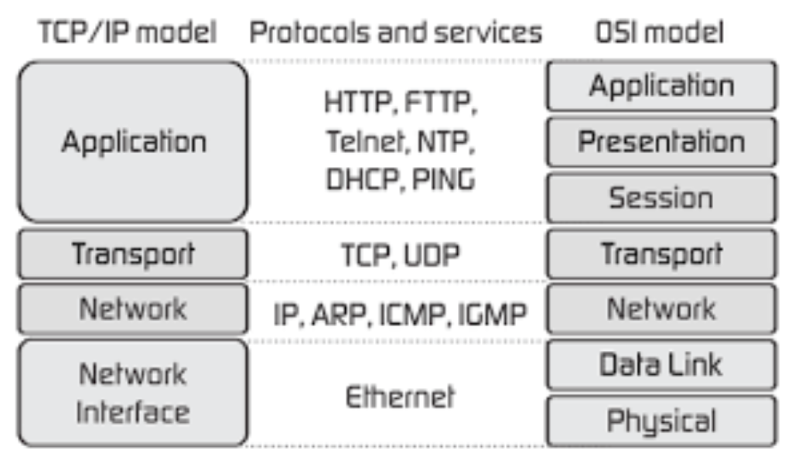

ISO OSI
• What is networking
Networking is the process of connecting two or more devices together so that they can communicate with each other. This allows devices to share resources, such as files, printers, and internet access.
Networking has been around since the beginning of human communication. In the early days, people communicated through speech, gestures, and writing. As technology evolved, people began to use devices to communicate, such as the telegraph, telephone, and radio.
Today, networking is essential for communication. We use networks to connect to the internet, to send email, and to make phone calls. We also use networks to connect our devices together, such as our computers, printers, and smartphones.
The base network standard used today is the ISO OSI model. The OSI model is a seven-layer model that defines how data is transferred over a network. The layers in the OSI model are:
• Physical layer: This layer is responsible for the physical transmission of data over the network.
• Data link layer: This layer is responsible for error detection and correction.
• Network layer: This layer is responsible for routing data between different networks.
• Transport layer: This layer is responsible for ensuring that data is delivered reliably.
• Session layer: This layer is responsible for managing the communication between two devices.
• Presentation layer: This layer is responsible for formatting data so that it can be understood by the devices on the network.
• Application layer: This layer is responsible for providing services to the user, such as email, web browsing, and file sharing.

The OSI model is a complex model, but it is important for understanding how networks work. By understanding the different layers in the OSI model, you can better understand how data is transferred over a network.
TCP-IP suite
The TCP/IP suite is a set of protocols that define how data is transmitted over the internet. It is named after its two most important protocols, the Transmission Control Protocol (TCP) and the Internet Protocol (IP).
The TCP/IP suite is divided into four layers:
• Physical layer: This layer is responsible for the physical transmission of data over the network.
• Data link layer: This layer is responsible for error detection and correction.
• Network layer: This layer is responsible for routing data between different networks.
• Transport layer: This layer is responsible for ensuring that data is delivered reliably.
The TCP/IP suite is the most widely used networking protocol suite in the world. It is used to connect billions of devices to the internet, including computers, smartphones, printers, and routers.
Here are some of the most important protocols in the TCP/IP suite:
◇ Transmission Control Protocol (TCP): TCP is a reliable protocol that ensures that data is delivered correctly. It is used for applications that require reliable data delivery, such as web browsing and file transfer.
◇ User Datagram Protocol (UDP): UDP is a connectionless protocol that does not guarantee that data is delivered correctly. It is used for applications that do not require reliable data delivery, such as streaming media and video games.
◇ Internet Protocol (IP): IP is the protocol that is responsible for addressing devices on a network. It assigns each device a unique IP address, which is used to identify the device and route data to it.
◇ Address Resolution Protocol (ARP): ARP is a protocol that is used to resolve IP addresses to MAC addresses. MAC addresses are physical addresses that are assigned to network cards.
◇ Internet Control Message Protocol (ICMP): ICMP is a protocol that is used to send error messages and status information. It is used by routers to send error messages when data cannot be delivered.
The TCP/IP suite is a complex and sophisticated set of protocols. It is essential for the internet to function, and it is used by billions of devices around the world.
